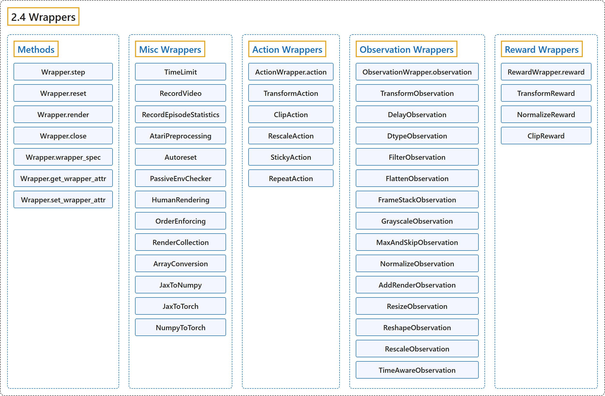

2.4 Wrappers
Classification

Glossary
| Term | Definition | 中文翻译 | Source |
|---|---|---|---|
| 2.4 Wrappers 包装器 |
"Wrappers are a convenient way to modify an existing environment without having to alter the underlying code directly." | 包装器是一种无需直接修改底层代码就能修改现有环境的便捷方式。 | Farama Foundation, n.d.-e, "Wrappers", para. 1 |
| Methods 方法 |
(No definition) | （无定义） | Farama Foundation, n.d.-e, "Methods" |
| Wrapper.step step 方法 |
"Uses the step() of the env that can be overwritten to change the returned data." | 调用 env 的 step()，可被重写以改变返回的数据。 | Farama Foundation, n.d.-e, "gymnasium.Wrapper.step", para. 1 |
| Wrapper.reset reset 方法 |
"Uses the reset() of the env that can be overwritten to change the returned data." | 调用 env 的 reset()，可被重写以改变返回的数据。 | Farama Foundation, n.d.-e, "gymnasium.Wrapper.reset", para. 1 |
| Wrapper.render render 方法 |
"Uses the render() of the env that can be overwritten to change the returned data." | 调用 env 的 render()，可被重写以改变返回的数据。 | Farama Foundation, n.d.-e, "gymnasium.Wrapper.render", para. 1 |
| Wrapper.close close 方法 |
"Closes the wrapper and env." | 关闭包装器和 env。 | Farama Foundation, n.d.-e, "gymnasium.Wrapper.close", para. 1 |
| Wrapper.wrapper_spec wrapper_spec 方法 |
"Generates a WrapperSpec for the wrappers." | 为包装器生成一个 WrapperSpec。 | Farama Foundation, n.d.-e, "gymnasium.Wrapper.wrapper_spec", para. 1 |
| Wrapper.get_wrapper_attr get_wrapper_attr 方法 |
"Gets an attribute from the wrapper and lower environments if name doesn’t exist in this object." | 从包装器及其下层环境获取属性，在该名称不存在于本对象时使用。 | Farama Foundation, n.d.-e, "gymnasium.Wrapper.get_wrapper_attr", para. 1 |
| Wrapper.set_wrapper_attr set_wrapper_attr 方法 |
"Sets an attribute on this wrapper or lower environment if name is already defined." | 在本包装器或下层环境上设置属性，在该名称已定义时使用。 | Farama Foundation, n.d.-e, "gymnasium.Wrapper.set_wrapper_attr", para. 1 |
| Misc Wrappers 其他包装器 |
(No definition) | （无定义） | Farama Foundation, n.d.-b, "Misc Wrappers" |
| TimeLimit TimeLimit（时间限制包装器） |
"Limits the number of steps for an environment through truncating the environment if a maximum number of timesteps is exceeded." | 在超过最大时间步数时截断环境，从而限制环境的步数。 | Farama Foundation, n.d.-b, "gymnasium.wrappers.TimeLimit", para. 1 |
| RecordVideo RecordVideo（录制视频包装器） |
"Records videos of environment episodes using the environment’s render function." | 用环境的 render 函数录制环境回合的视频。 | Farama Foundation, n.d.-b, "gymnasium.wrappers.RecordVideo", para. 1 |
| RecordEpisodeStatistics RecordEpisodeStatistics（记录回合统计包装器） |
"This wrapper will keep track of cumulative rewards and episode lengths." | 这个包装器会跟踪累计奖励和回合长度。 | Farama Foundation, n.d.-b, "gymnasium.wrappers.RecordEpisodeStatistics", para. 1 |
| AtariPreprocessing AtariPreprocessing（Atari 预处理包装器） |
"Implements the common preprocessing techniques for Atari environments (excluding frame stacking)." | 实现 Atari 环境常用的预处理技术（不含帧堆叠）。 | Farama Foundation, n.d.-b, "gymnasium.wrappers.AtariPreprocessing", para. 1 |
| Autoreset Autoreset（自动重置包装器） |
"The wrapped environment is automatically reset when a terminated or truncated state is reached." | 被包装的环境在到达终止或截断状态时自动重置。 | Farama Foundation, n.d.-b, "gymnasium.wrappers.Autoreset", para. 1 |
| PassiveEnvChecker PassiveEnvChecker（被动环境检查包装器） |
"A passive wrapper that surrounds the step, reset and render functions to check they follow Gymnasium’s API." | 一个被动包装器，包住 step、reset 和 render 函数，检查它们是否遵循 Gymnasium 的 API。 | Farama Foundation, n.d.-b, "gymnasium.wrappers.PassiveEnvChecker", para. 1 |
| HumanRendering HumanRendering（人类渲染包装器） |
"Allows human like rendering for environments that support “rgb_array” rendering." | 让支持“rgb_array”渲染的环境能进行 human 式渲染。 | Farama Foundation, n.d.-b, "gymnasium.wrappers.HumanRendering", para. 1 |
| OrderEnforcing OrderEnforcing（顺序强制包装器） |
"Will produce an error if step or render is called before reset." | 若在 reset 之前调用 step 或 render，就报错。 | Farama Foundation, n.d.-b, "gymnasium.wrappers.OrderEnforcing", para. 1 |
| RenderCollection RenderCollection（渲染收集包装器） |
"Collect rendered frames of an environment such render returns a list[RenderedFrame]." | 收集环境的渲染帧，使 render 返回 list[RenderedFrame]。 | Farama Foundation, n.d.-b, "gymnasium.wrappers.RenderCollection", para. 1 |
| ArrayConversion ArrayConversion（数组转换包装器） |
"Wraps an Array API compatible environment so that it can be interacted with with another Array API framework." | 包装一个兼容 Array API 的环境，使其能用另一个 Array API 框架来交互。 | Farama Foundation, n.d.-b, "gymnasium.wrappers.ArrayConversion", para. 1 |
| JaxToNumpy JaxToNumpy（Jax 转 NumPy 包装器） |
"Wraps a Jax-based environment such that it can be interacted with NumPy arrays." | 包装一个基于 Jax 的环境，使其能用 NumPy 数组交互。 | Farama Foundation, n.d.-b, "gymnasium.wrappers.JaxToNumpy", para. 1 |
| JaxToTorch JaxToTorch（Jax 转 PyTorch 包装器） |
"Wraps a Jax-based environment so that it can be interacted with PyTorch Tensors." | 包装一个基于 Jax 的环境，使其能用 PyTorch 张量交互。 | Farama Foundation, n.d.-b, "gymnasium.wrappers.JaxToTorch", para. 1 |
| NumpyToTorch NumpyToTorch（NumPy 转 PyTorch 包装器） |
"Wraps a NumPy-based environment such that it can be interacted with PyTorch Tensors." | 包装一个基于 NumPy 的环境，使其能用 PyTorch 张量交互。 | Farama Foundation, n.d.-b, "gymnasium.wrappers.NumpyToTorch", para. 1 |
| Action Wrappers 动作包装器 |
"Superclass of wrappers that can modify the action before step()." | 能在 step() 之前修改动作的包装器的超类。 | Farama Foundation, n.d.-a, "gymnasium.ActionWrapper", para. 1 |
| ActionWrapper.action action 方法 |
"Returns a modified action before step() is called." | 在调用 step() 之前返回修改后的动作。 | Farama Foundation, n.d.-a, "gymnasium.ActionWrapper.action", para. 1 |
| TransformAction TransformAction（动作变换包装器） |
"Applies a function to the action before passing the modified value to the environment step function." | 先对动作应用一个函数，再把修改后的值传给环境的 step 函数。 | Farama Foundation, n.d.-a, "gymnasium.wrappers.TransformAction", para. 1 |
| ClipAction ClipAction（动作裁剪包装器） |
"Clips the action pass to step to be within the environment’s action_space." | 裁剪传给 step 的动作，使其落在环境的 action_space 之内。 | Farama Foundation, n.d.-a, "gymnasium.wrappers.ClipAction", para. 1 |
| RescaleAction RescaleAction（动作缩放包装器） |
"Affinely (linearly) rescales a Box action space of the environment to within the range of [min_action, max_action]." | 把环境的 Box 动作空间仿射（线性）缩放到 [min_action, max_action] 范围内。 | Farama Foundation, n.d.-a, "gymnasium.wrappers.RescaleAction", para. 1 |
| StickyAction StickyAction（粘滞动作包装器） |
"Adds a probability that the action is repeated for the same step function." | 增加一个概率，使动作在同一 step 函数中被重复。 | Farama Foundation, n.d.-a, "gymnasium.wrappers.StickyAction", para. 1 |
| RepeatAction RepeatAction（重复动作包装器） |
"Repeats the given action for num_repeats steps, accumulating the reward." | 把给定动作重复 num_repeats 步，并累加奖励。 | Farama Foundation, n.d.-a, "gymnasium.wrappers.RepeatAction", para. 1 |
| Observation Wrappers 观测包装器 |
"Modify observations from Env.reset() and Env.step() using observation() function." | 用 observation() 函数修改 Env.reset() 和 Env.step() 返回的观测。 | Farama Foundation, n.d.-c, "gymnasium.ObservationWrapper", para. 1 |
| ObservationWrapper.observation observation 方法 |
"Returns a modified observation." | 返回修改后的观测。 | Farama Foundation, n.d.-c, "gymnasium.ObservationWrapper.observation", para. 1 |
| TransformObservation TransformObservation（观测变换包装器） |
"Applies a function to the observation received from the environment’s Env.reset() and Env.step() that is passed back to the user." | 对从环境的 Env.reset() 和 Env.step() 收到、要返回给用户的观测应用一个函数。 | Farama Foundation, n.d.-c, "gymnasium.wrappers.TransformObservation", para. 1 |
| DelayObservation DelayObservation（观测延迟包装器） |
"Adds a delay to the returned observation from the environment." | 给环境返回的观测加上延迟。 | Farama Foundation, n.d.-c, "gymnasium.wrappers.DelayObservation", para. 1 |
| DtypeObservation DtypeObservation（观测类型转换包装器） |
"Modifies the dtype of an observation array to a specified dtype." | 把观测数组的 dtype 改为指定的 dtype。 | Farama Foundation, n.d.-c, "gymnasium.wrappers.DtypeObservation", para. 1 |
| FilterObservation FilterObservation（观测过滤包装器） |
"Filters a Dict or Tuple observation spaces by a set of keys or indexes." | 按一组键或索引过滤 Dict 或 Tuple 观测空间。 | Farama Foundation, n.d.-c, "gymnasium.wrappers.FilterObservation", para. 1 |
| FlattenObservation FlattenObservation（观测展平包装器） |
"Flattens the environment’s observation space and each observation from reset and step functions." | 展平环境的观测空间以及 reset 和 step 函数返回的每个观测。 | Farama Foundation, n.d.-c, "gymnasium.wrappers.FlattenObservation", para. 1 |
| FrameStackObservation FrameStackObservation（帧堆叠观测包装器） |
"Stacks the observations from the last N time steps in a rolling manner." | 以滚动方式堆叠最近 N 个时间步的观测。 | Farama Foundation, n.d.-c, "gymnasium.wrappers.FrameStackObservation", para. 1 |
| GrayscaleObservation GrayscaleObservation（灰度观测包装器） |
"Converts an image observation computed by reset and step from RGB to Grayscale." | 把 reset 和 step 计算出的图像观测从 RGB 转换为灰度。 | Farama Foundation, n.d.-c, "gymnasium.wrappers.GrayscaleObservation", para. 1 |
| MaxAndSkipObservation MaxAndSkipObservation（取最大并跳帧观测包装器） |
"Skips the N-th frame (observation) and return the max values between the two last observations." | 跳过第 N 帧（观测），并返回最后两个观测之间的最大值。 | Farama Foundation, n.d.-c, "gymnasium.wrappers.MaxAndSkipObservation", para. 1 |
| NormalizeObservation NormalizeObservation（观测归一化包装器） |
"Normalizes observations to be centered at the mean with unit variance." | 把观测归一化为以均值为中心、方差为 1。 | Farama Foundation, n.d.-c, "gymnasium.wrappers.NormalizeObservation", para. 1 |
| AddRenderObservation AddRenderObservation（加入渲染观测包装器） |
"Includes the rendered observations in the environment’s observations." | 把渲染出的观测加入环境的观测中。 | Farama Foundation, n.d.-c, "gymnasium.wrappers.AddRenderObservation", para. 1 |
| ResizeObservation ResizeObservation（观测尺寸调整包装器） |
"Resizes image observations using OpenCV to a specified shape." | 用 OpenCV 把图像观测调整为指定形状。 | Farama Foundation, n.d.-c, "gymnasium.wrappers.ResizeObservation", para. 1 |
| ReshapeObservation ReshapeObservation（观测变形包装器） |
"Reshapes Array based observations to a specified shape." | 把基于数组的观测变形为指定形状。 | Farama Foundation, n.d.-c, "gymnasium.wrappers.ReshapeObservation", para. 1 |
| RescaleObservation RescaleObservation（观测缩放包装器） |
"Affinely (linearly) rescales a Box observation space of the environment to within the range of [min_obs, max_obs]." | 把环境的 Box 观测空间仿射（线性）缩放到 [min_obs, max_obs] 范围内。 | Farama Foundation, n.d.-c, "gymnasium.wrappers.RescaleObservation", para. 1 |
| TimeAwareObservation TimeAwareObservation（时间感知观测包装器） |
"Augment the observation with the number of time steps taken within an episode." | 用回合内已走的时间步数来扩充观测。 | Farama Foundation, n.d.-c, "gymnasium.wrappers.TimeAwareObservation", para. 1 |
| Reward Wrappers 奖励包装器 |
"Superclass of wrappers that can modify the returning reward from a step." | 能修改 step 返回的奖励的包装器的超类。 | Farama Foundation, n.d.-d, "gymnasium.RewardWrapper", para. 1 |
| RewardWrapper.reward reward 方法 |
"Returns a modified environment reward." | 返回修改后的环境奖励。 | Farama Foundation, n.d.-d, "gymnasium.RewardWrapper.reward", para. 1 |
| TransformReward TransformReward（奖励变换包装器） |
"Applies a function to the reward received from the environment’s step." | 对从环境的 step 收到的奖励应用一个函数。 | Farama Foundation, n.d.-d, "gymnasium.wrappers.TransformReward", para. 1 |
| NormalizeReward NormalizeReward（奖励归一化包装器） |
"Normalizes immediate rewards such that their exponential moving average has an approximately fixed variance." | 归一化即时奖励，使其指数移动平均的方差近似固定。 | Farama Foundation, n.d.-d, "gymnasium.wrappers.NormalizeReward", para. 1 |
| ClipReward ClipReward（奖励裁剪包装器） |
"Clips the rewards for an environment between an upper and lower bound." | 把环境的奖励裁剪到上下界之间。 | Farama Foundation, n.d.-d, "gymnasium.wrappers.ClipReward", para. 1 |
References
Farama Foundation. (n.d.-a). Action Wrappers. Gymnasium Documentation (Version 1.4.0). Retrieved October 31, 2026, from https://gymnasium.farama.org/api/wrappers/action_wrappers/
Farama Foundation. (n.d.-b). Misc Wrappers. Gymnasium Documentation (Version 1.4.0). Retrieved October 31, 2026, from https://gymnasium.farama.org/api/wrappers/misc_wrappers/
Farama Foundation. (n.d.-c). Observation Wrappers. Gymnasium Documentation (Version 1.4.0). Retrieved October 31, 2026, from https://gymnasium.farama.org/api/wrappers/observation_wrappers/
Farama Foundation. (n.d.-d). Reward Wrappers. Gymnasium Documentation (Version 1.4.0). Retrieved October 31, 2026, from https://gymnasium.farama.org/api/wrappers/reward_wrappers/
Farama Foundation. (n.d.-e). Wrappers. Gymnasium Documentation (Version 1.4.0). Retrieved October 31, 2026, from https://gymnasium.farama.org/api/wrappers/